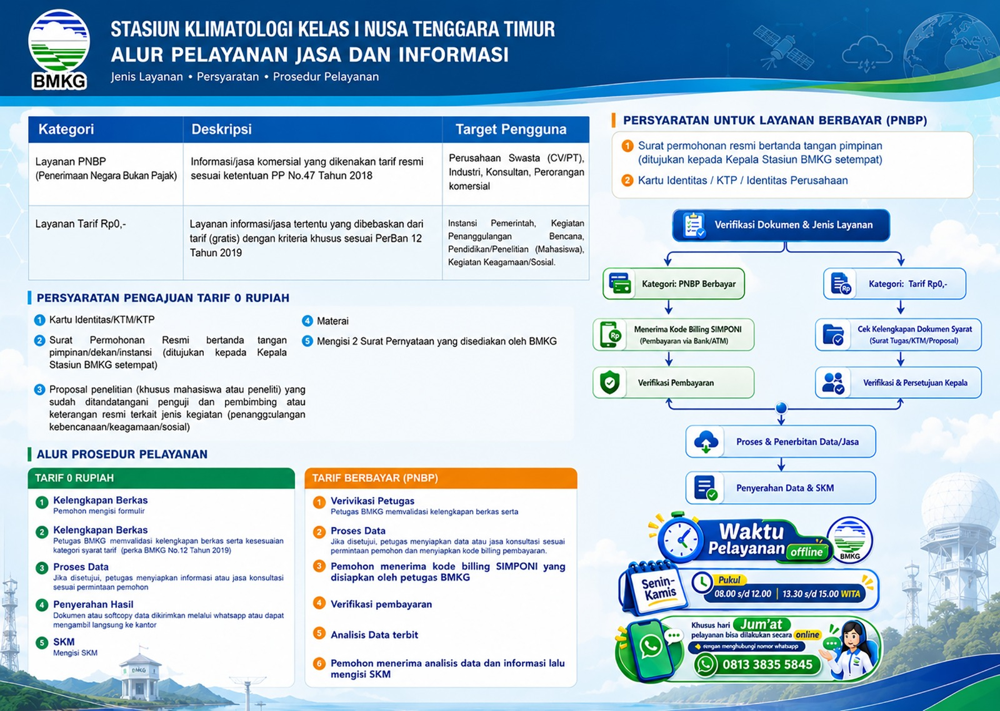

Stasiun Klimatologi Kelas I Nusa Tenggara Timur
Pelayanan Data dan Informasi
Lihat Alur
LAYANAN DATA & INFORMASI BMKG
Pelayanan Jasa dan Informasi
Jenis layanan • Persyaratan • Prosedur pelayanan

Geser untuk melihat seluruh informasi. Klik gambar untuk memperbesar.